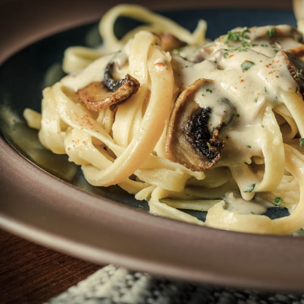
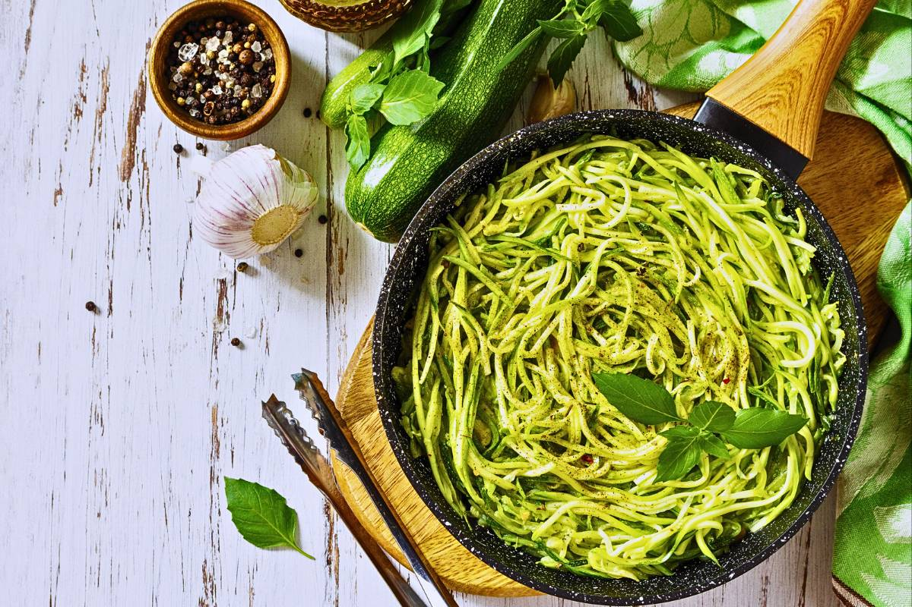
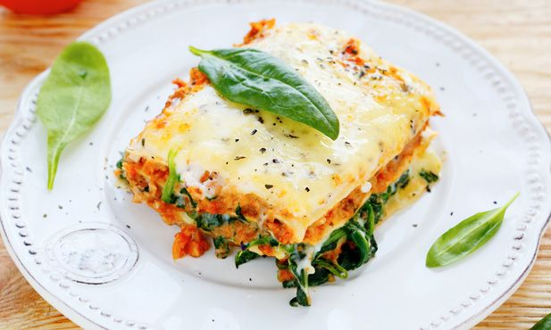
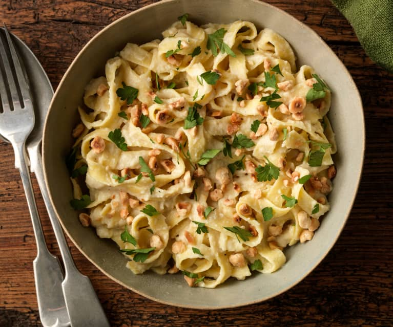
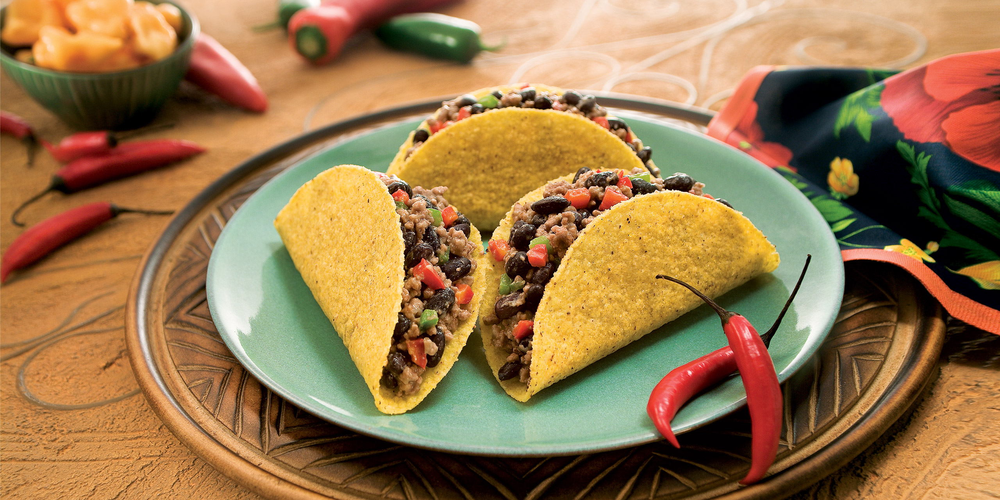
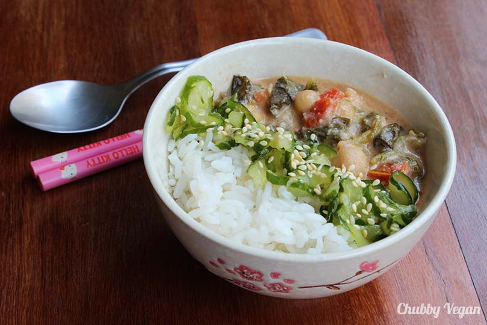

Macarronada Vegana Supercremosa
Ingredientes:
- 300 g de fettuccine (ou outra massa de sua preferência)
- 200 g de brócolis picado
- 200 g de champignon
- 1 colher (sopa) de azeite ou óleo
- ½ colher (chá) de sal
- ½ colher (chá) de salsinha
- ½ colher (chá) de orégano
- Pimenta-do-reino a gosto
- 4 dentes de alho picados
- 1 xícara de tomates cereja cortados ao meio (ou tomate cortado em cubinhos)
- ½ xícara de água
- Água para o cozimento do macarrão
Ingredientes para o Molho Branco Vegano:
- 80 g de castanhas-de-caju (deixar de molho em água fervente por 15 minutos)
- 400 ml de água
- 2 colheres (sopa) de polvilho azedo
- ¼ colher (chá) de noz-moscada
- 1 colher (sopa) de óleo
Modo de Preparo:
- Para o macarrão, cozinhe a massa de acordo com as instruções do rótulo e reserve.
- Em uma panela, aqueça o azeite e refogue o alho. Adicione o brócolis cortado em cubos e ½ xícara de água para cozinhá-lo. Quando a água evaporar, coloque o champignon e refogue a mistura. Tempere com sal, orégano, salsinha e pimenta-do-reino a gosto.
- Para o molho branco, escorra as castanhas e reserve. No liquidificador, adicione 400 ml de água, 1 colher (sopa) de óleo, castanhas-de-caju, sal, noz-moscada e polvilho. Bata bem por dois minutos, até o creme ficar homogêneo.
- Depois, despeje sobre os legumes refogados. Tire o macarrão da água e tempere com o molho. Se quiser, adicione um pouco da água do cozimento para misturar e dar mais cremosidade ainda à receita.
Macarrão ao Pesto Vegano
Ingredientes:
- 250g de macarrão (espaguete, penne, etc.)
- 2 xícaras de folhas de manjericão fresco
- 1/4 xícara de nozes ou castanhas de caju
- 2 dentes de alho
- 1/4 xícara de azeite de oliva
- Suco de 1 limão
- Sal e pimenta a gosto
- 2 colheres de sopa de levedura nutricional (opcional, para um sabor mais "queijoso")
Modo de Preparo:
- Cozinhe o macarrão conforme as instruções da embalagem.
- Enquanto o macarrão cozinha, prepare o pesto: no liquidificador ou processador de alimentos, combine o manjericão, nozes, alho, azeite, suco de limão, sal e pimenta. Bata até obter uma consistência homogênea.
- Escorra o macarrão e misture com o pesto. Sirva quente ou frio.
Lasanha de Legumes Vegana
Ingredientes:
- 9 folhas de lasanha sem ovos
- 2 xícaras de molho de tomate
- 1 abobrinha cortada em fatias finas
- 1 berinjela cortada em fatias finas
- 1 pimentão vermelho cortado em tiras
- 2 xícaras de espinafre fresco
- 1 xícara de queijo vegano ralado (opcional)
- Azeite de oliva
- Sal e pimenta a gosto
Modo de Preparo:
- Preaqueça o forno a 180°C.
- Cozinhe as folhas de lasanha conforme as instruções da embalagem.
- Em uma frigideira grande, aqueça um pouco de azeite e refogue a abobrinha, a berinjela e o pimentão até ficarem macios. Tempere com sal e pimenta.
- Em um refratário, monte a lasanha: comece com uma camada de molho de tomate, depois coloque uma camada de folhas de lasanha, uma camada de legumes refogados e uma camada de espinafre. Repita as camadas até terminar os ingredientes.
- Se estiver usando, espalhe o queijo vegano ralado por cima.
- Asse por 30-40 minutos, até que a lasanha esteja bem cozida e o queijo derretido. Deixe descansar por alguns minutos antes de servir.
Fettuccine Alfredo Vegano
Ingredientes:
- 250g de fettuccine
- 1 xícara de castanhas de caju cruas, demolhadas por 4 horas
- 1 1/2 xícaras de água
- 2 colheres de sopa de levedura nutricional
- 2 dentes de alho
- Suco de 1 limão
- Sal e pimenta a gosto
- Salsa fresca picada para decorar
Modo de Preparo:
- Cozinhe o fettuccine conforme as instruções da embalagem.
- Enquanto o fettuccine cozinha, escorra as castanhas de caju e coloque-as no liquidificador junto com a água, levedura nutricional, alho, suco de limão, sal e pimenta. Bata até obter um creme liso e homogêneo.
- Escorra o fettuccine e misture com o molho Alfredo vegano. Se o molho estiver muito grosso, adicione um pouco mais de água até atingir a consistência desejada.
- Sirva imediatamente, decorado com salsa fresca picada.
Tacos Vegetarianos com Feijão Preto
Ingredientes:
- 8 tortilhas de milho ou trigo
- 1 lata de feijão preto, escorrido e enxaguado
- 1 pimentão vermelho, picado
- 1 cebola roxa, picada
- 2 dentes de alho, picados
- 1 colher de chá de cominho em pó
- 1 colher de chá de páprica
- Sal e pimenta a gosto
- 1/4 xícara de coentro fresco picado
- 1 abacate, fatiado
- 1/2 xícara de queijo ralado (opcional)
- Molho de sua preferência (salsa, guacamole, etc.)
Modo de Preparo:
- Em uma frigideira grande, aqueça um pouco de azeite e refogue a cebola e o alho até ficarem macios.
- Adicione o pimentão, cominho, páprica, sal e pimenta. Cozinhe por 3-4 minutos.
- Adicione o feijão preto e cozinhe por mais 5 minutos, mexendo ocasionalmente.
- Aqueça as tortilhas em uma frigideira ou no forno.
- Monte os tacos com a mistura de feijão, abacate, queijo (se usar), e molho de sua preferência. Decore com coentro fresco.
Curry de Grão-de-Bico com Espinafre
Ingredientes:
- 1 lata de grão-de-bico, escorrido e enxaguado
- 2 xícaras de espinafre fresco
- 1 cebola picada
- 2 dentes de alho picados
- 1 colher de sopa de pasta de curry (ou a gosto)
- 1 lata de leite de coco
- 1 xícara de tomate pelado em cubos (ou molho de tomate)
- 2 colheres de sopa de óleo vegetal
- Sal e pimenta a gosto
- Arroz basmati ou integral para servir
Modo de Preparo:
- Em uma panela grande, aqueça o óleo e refogue a cebola e o alho até ficarem macios.
- Adicione a pasta de curry e cozinhe por 1 minuto, mexendo.
- Adicione o leite de coco e o tomate. Mexa bem e deixe ferver.
- Adicione o grão-de-bico e cozinhe por 10 minutos, até o molho engrossar.
- Acrescente o espinafre e cozinhe até murchar. Ajuste o sal e a pimenta.
- Sirva o curry quente sobre arroz.